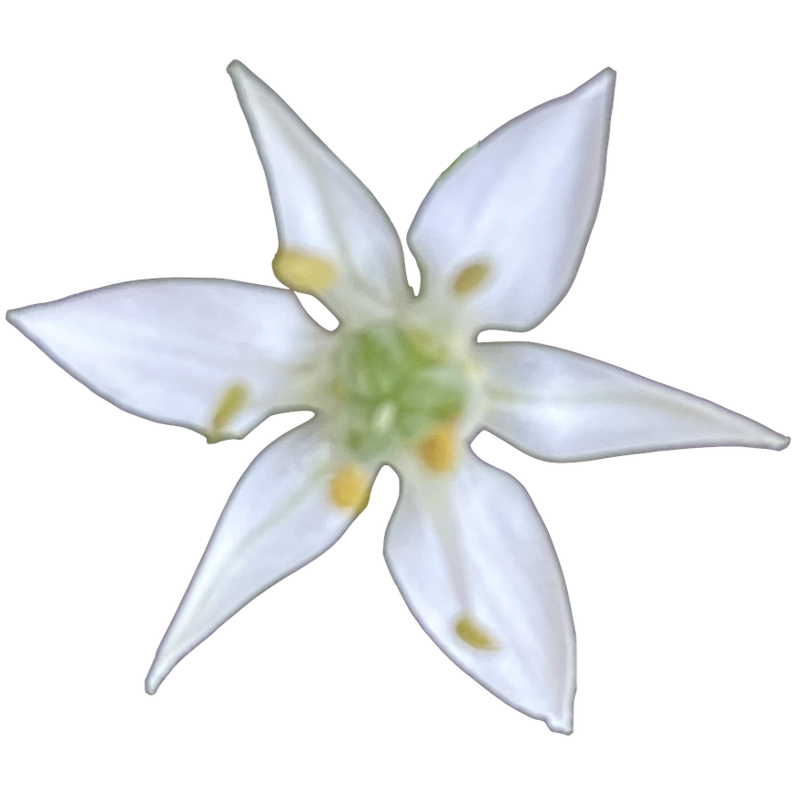

The Black-Eyed Susan is beautiful by itself but even prettier with the Goldfinches on it. Lately all my Black-Eyed Susan bushes have been munched up. This one is surviving surrounded by Beebalm that keeps the munchers away. And, with its bright black and gold flowers, it's attracting beautiful finches to my garden.
Welcome
This page is for the garden enthusiasts. It is mostly about plants in my NC garden that are either edible or native to US South East, with a few non-locals as well.
Check out the Data Page that has all the info I've collected so far. Of course, it is only a fraction of the local flora and should increase with time.
The Design Page is intended for planning out your garden. Plant choices in the visual tab are limited to those in database. If you need to "plant" something I don't have, you have to add it to the data page table first. Any information you add is saved in the local storage of your machine. Clearing your browsing history will also erase that data and all the design.

Notes from my garden...
Aug 2021
Oct 2020


Marigolds are becoming an annual staple in my garden. Although they are supposed to be easy to grow from a seed, so easy in fact, that they're recommended for gardening with children, it took me some time to get them going. The key to my somewhat success here is persistence and planting many many seeds, which are then thinned by rabbits. Of course the seedlings still need their usual sun and water. On the first photo: a beautiful butterfly, maybe Agraulis Vanillae, on the Blood Orange Marigold, a neat match of colors. On the second: also Blood Orange Marigold with a moth that might be an Ailanthus Webworm Moth.
Oct 2020

The swallowtail butterflies are frequent visitors of the Butterfly Bush. These Buddleja bushes are enjoyed by many flying creatures, including different types of bees, butterflies, hummingbirds and hummingbird moths. It's hard to let go of such an abundant nectar source but it's something I'd like to replace as the bush is not native to North America. I've read that there are non-reseeding varieties now - a nice alternative to consider.
Summer 2020

The Swamp Leather Flower doesn't offer abundant foliage but its flowers are delicate, small and very beautiful. Here is one visited by a bumblebee. I've planted my Swamp Leather Flower with Coral Honeysuckle for more green. The Swamp Leather Flower dies to the ground in winter and comes back in spring, so it doesn't get as big as its neighboring honeysuckle. The flowers are mostly at your eye level, perfect for viewing pleasure.
Summer 2020

The milkweed pictured here must be the healthiest in my garden. The monarchs tend to ignore it, for reasons not entirely clear to me, maybe because it is on the hairy side. Whatever the reason, the milkweed continues to thrive and gets to keep all its leaves. It's been popular with bees, bumble and honey, as well as one butterfly. At one point this summer of 2020, there were 20 bumble bees on it all at once. Towards the end of the summer, the milkweed bugs discovered this plant and sucked lots of juice out of it but it still produced plenty of healthy seeds.
Summer 2020

This year I've started a row of native flowers along the road that gets some sun and some partial sun. The phlox got quickly eaten every time I tried planting it, as well as all of the Black-eyed Susan, that was planted last year and was attempting to come back. However, the newly planted Bee Balm got visited by a beautiful humming bird.
Summer 2020

Bumble bees have got to be the most common visitors in my garden. Here is one on a Tickseed.
Sep 2019

Though Marigolds are not native to North Carolina, they are beneficial for the soil and are liked by bumblebees, moths, and some butterflies, especially when mixed with other insect favorites. On the picture to the left, a swallowtail butterfly is visiting the African Marigold planted with Dwarf Zinnias and Black-Eyed Susan (late Summer 2019). Rabbits are fond of the Black-Eyed Susan's leafs and young shoots. The long-eared ones also eat the Marigold sprouts and flowers, although they are supposed to be repelled by these plants. Sprouts of many other plants, like zinnias, sunflowers, cucumbers, are really liked by rabbits of course. At the top of bunnies' favorites, in my opinion, are pansies and phlox with latter especially loved. I've been able to keep mine growing by consistently reapplying a repellent, the "Plantskydd" worked well for me so far. It doesn't smell horribly, like some do, however somehow it's keeping the phlox and other plants safe from being consumed. I had to reapply it a lot this year, due to abundance of rabbits.
Sep 2019

This photo is of a Goldfinch on a Black-Eyed Susan. These beautiful birds are only this bright in the summer, grayish in winter. They like to pluck all the petals off zinnias, coneflowers, rudbeckia, etc., supposedly to check the seed ripeness, but just plant more zinnias and it's a win-win.
- Styrofoam is accepted at Publix, along with the usual bottles and paper products.
- Many grocery stores, such as Harris Teeter and FoodLion, recycle plastic bags and paper. Harris Teeter seem to also take plastic bottles.
- Staples recycles ink cartriges and also gives you credit for those. You do have to sign up for their program to get the credit and I have yet to figure out how much you get back... They used to also recycle batteries but would not take those on my last visit. Not sure if it's a change in company recycling policy or just depends on the employee you get.
- The city recycling takes just about everything: old paints, batteries, small and large electronics, boxes, etc. I highly recommend finding one in your area.
- And of course there is always composting! I am a proud owner of Envirocycle revolving composter, which is great. It's small, easy to spin, empty and drain its tea. When I remember to use it it's great to have!
- Don't plant phlox where rabbits might happen, unless you intend to feed the phlox to the rabbits.
- Edibles, fruits and vegetables, need sun, though some herbs will do fine with very little dampled sun, mint and sage for example.